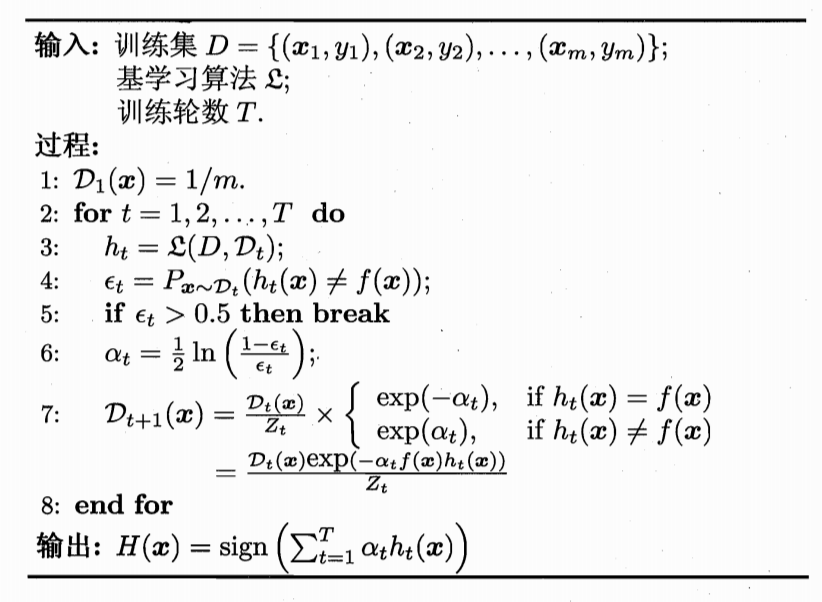
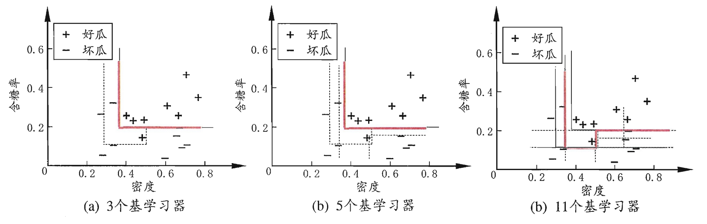
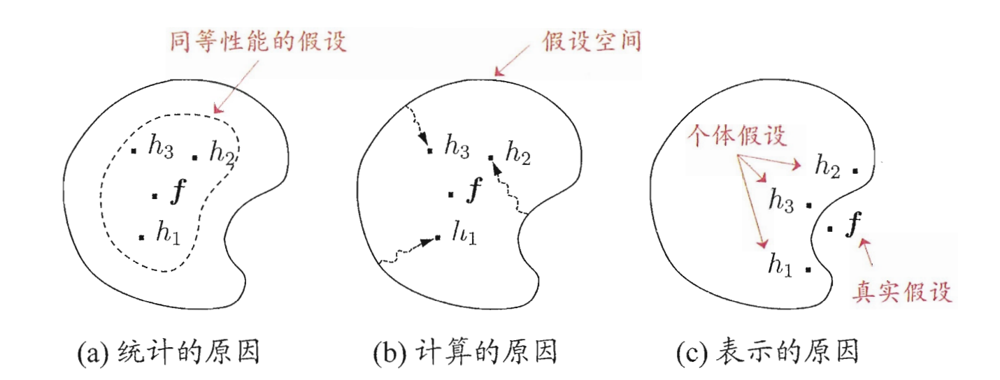
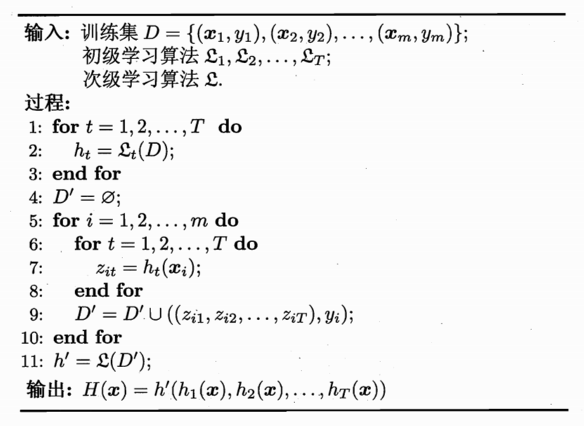

集成学习
集成学习(ensemble learning昂桑宝~)通过构建并结合多个学习器来完成学习任务，第八章
个体与集成
集成学习特点：随着集成中个体分类器数量的增大，集成错误率将呈指数级下降，最终趋于零。但这里假设了各个学习器之间的错误率是相互独立的，但实际中因为是同一个样本集训练出来的其必然存在有联系，因此如何找到”好而不同“的学习器组合就是关键。
依据其学习器的类型分：
- 同质：里面的个体学习器用的一种类型的，里面的个体学习器叫做”基学习器“
- 异质：相反，”组件学习器“
依据个体学习器的生成方式分类：
- 个体学习器之间存在强依赖关系，串行生成，Boosting
- 个体学习器之间不存在强依赖关系，并行生成，Bagging，随机森林
Boosting
特定：将弱学习器提升为强学习器，关注于降低偏差，基本只适合二分类问题。
其中最著名的代表是AdaBoosting，而使用”加性模型“会好推导一些（略，见书P174）
其中$D_t(x)$表示的是这一轮中样本的分布，在初始化第一行的时候我们可以看出他是均匀分布的，而推算一下第七行我们可以发现这里给分类错误的样本的分布系数更高了，也就是更关注分类错误的样本需要在后面的轮数中纠正，而7中的分子$Z_t$是一个保持$D$为分布的参数。为达到这个分布可以有两种方式：自身可带权训练的模型和每次”重新抽样“，前者可能会中途无法过if判断导致中断，而后者给了一个重新开始的机会能坚持到T轮结束。在推导中我们需要最小化的目标函数是指数损失函数：
$$
l_{exp}(H|D)= \mathbb E_{x \in D}[e^{-f(x)h(x)}]
$$
Bagging与随机森林
我们要希望集成后的模型泛化能力强的话，就更希望每个学习器较独立，但是这个独立已经说了，是不容易的，但是可以有促进的方式，如我们使每个基学习器所使用的样本不完全相同，即使用相互有交叠的采样子集。
bagging
特点：基于Bootstrap，降低方差，并行式，可用于多分类、回归问题。
算法：Bootstrap后训练完每个基学习器后，在集成时分类任务使用投票法，回归任务使用平均值。
Bootstrap对其的帮助：
- 每个样本大致能抽样63.2%，剩下的可以做泛化误差的”包外估计“
- 决策树时用包外样本做剪枝辅助/估计后验概率帮助处理0样本特征
- 神经网络中辅助早期停止减小过拟合风险
随机森林
随机森林是在bagging的基础上，限制了基学习器使用决策树，同时对决策树选择最优属性这个步”放宽“：从这个点的所有属性中随机选择一个子集，再从子集中计算选择一个最优属性。相当于基础的bagging只是对样本的选择增加了扰动，而随机森林对基学习器的训练步骤中也增加了扰动，根据上面的描述可以得出随机森林的一些特点：
- 基学习器较少的错误率较高，如下图的前面部分线段
- 最后通常会收敛到更低的泛化误差
- 训练效率优于bagging，因为不需要大量精准地计算最优属性了
结合策略
集成的一个关键也在于如何”合“，即怎样将各个学习器学到的东西合起来，后面讲会介绍几种策略。首先学习器结合有以下优点：
- 统计角度：在一个大的假设圈里选择相信一个学习器的结果会是危险的，结合多个更稳妥
- 计算原因：容易陷入局部最优，如上图b所示，单个的学习器都没有指向真正f的位置，但是他们合起来的趋向是表征了f的位置的
- 表示原因：有时候我们的最优f并不在我们的假设空间中的（假设我们想错了分布一类的），这时如果是单个的假设不太能表示出f的位置，但如果多个学习器结合起来就可能描摹出f的轮廓来
平均法
适合数值型的，可以做绝对的平均或者是加权平均，但是需要注意的是加权平均不一定就比绝对平均好，注意过拟合！！！
投票法
适合平均型，可以分为如下几类：
学习法
前面两种都是较直接地结合，但也是可以用学习器来结合的，用次级学习器来结合之前初级学习器的结果，即将初级学习器的输出特征作为次级学习器的输入特征。常用方法是stacking，常用的次级学习器是多响应线性回归（MLR），整个学习法的算法流程图如下：
多样性
暂时略 后续补充